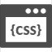

おおぬき みゆ
2003年生まれ。茨城県出身。栃木県在住。高校卒業後、接客業へ就職。
ホスピタリティ精神を学ぶとともに、たくさんの方々との関わりを経験してまいりました。
趣味
旅行。ディズニー
周辺観光地、食べ歩きスポット、ロケーションにこだわってホテルを選ぶことが多いです。
日本全国めぐってみたいです！
ディズニーリゾートでは、食べ歩きメインで過ごすことが多いです。
世界観が素敵で定期的に訪れています！
興味があること、好きなこと
美容に興味があります。
接客業をしているため髪色や爪先等、制限されているが多いですが、
まつ毛サロンに行くことは多いです。まつ毛が上がっているとかわいいはもちろん、
気分も上がるんですよね。ほんとに素晴らしいです。
美容はとても奥深いです。キラキラした空間が特別で気持ちをリセットでき、
美しさの更新はもちろん、新しい自分にもなれる。
滞在時間が長いためちょっとしたコミュニケーションがとれたり、イメージや憧れを実現し
人を輝かせる手伝いをしてくれる場所だと思います。
他にも、甘いものが好きです。色合いや見た目もかわいくて、おいしいは視覚も味覚も幸せすぎます。
かわいいものは共有したくなります。
私の性格
真面目
人見知り
明るい
好奇心旺盛
感受性豊か
向上心
できること
HTML.CSSを使ったHP作成
JavaScript習得中
私の思い
依頼者様のターゲット層に興味を持っていただけるようにできる限りの理解をしてから作成につなげたいと思っております。
イメージやご要望等、ぜひお話お聞かせください！
印象に残る、思いのこもったサイトを一緒に作り上げていきましょう！
よろしくお願いいたします。